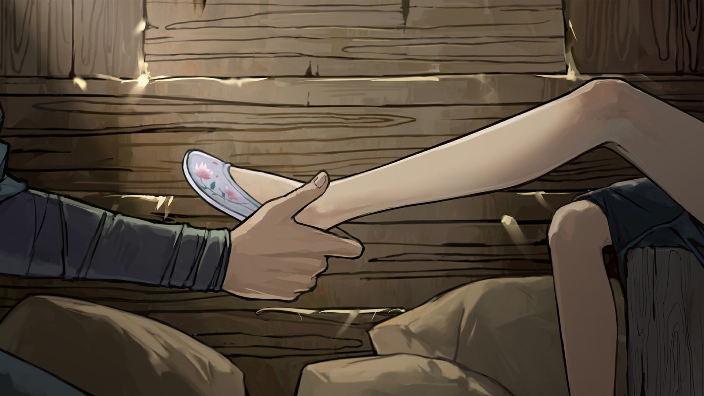

良 第十四章2：礼物
返回
满穗配音
良爷不给自己留吗
良爷没给我买礼物吗
不买就不买
哦原来是这样那良爷为何刚才要骗我呀
噗良爷这么大岁数还和我一般见识真是孩子气
那是什么礼物什么时候给我看呀
嗯一定要去的
嗯会的
良爷你就这么把她们留客栈了呀
信任啊以前有个姐姐对我很好她就有点像鸢姐姐
良爷为何唯独没把我留客栈
对我还是要去洛阳的我一定要去复仇
良爷还是可以把我卖给豚妖尹三应该在洛阳城里有线人
你可以说在路上遇到几只大虫其他孩子和兴爷都被吃了只赶着救出了我
我再帮你一起撒谎作证他们大概就不追究良爷的责任了兴许还能多给你一笔钱
好那总之我们还是先去洛阳吧大不了我也不复仇了只是去那里玩一趟
对啊早就知道了
良爷我们如果在盐袋里下毒是不是能毒死豚妖
嗯说的也是
那我们能不能藏在马车里到时候杀出来去杀了那豚妖
啊这样吗良爷不是想做侠客吗诛杀豚妖青史留名
良爷你之前去过洛阳吗
良爷觉得洛阳和其他城市相比有何不同
我的记忆不太准了
我家虽然是住洛阳附近但是离得还是有点远的我从小到大只进了洛阳城一次
很小的时候是爹爹带我进洛阳城的我记得城里有一条河河的尽头是一个湖
那时我好像走丢了沿着河一边哭一边走走到河的尽头看到一个湖正好撞见了爹爹
那大概是我记错了吧
唉可惜了呀
可惜翠儿妹妹她们从来没去过洛阳我还想带她们看看来着
现在走着走着就只剩我和良爷两个人了
没说什么特别的我就是跟她们说今后还会来看她们
嗯都差不多毕竟我没法给她们准备礼物至少要跟她们说些送别的话
哦说起来良爷是不是忘了给我的礼物
这是鞋
良爷为什么要给我买鞋
喜欢
料子真好摸起来好软
良爷你能帮我换吗
啊就是帮我脱鞋再给我换上新的
我记得很小的时候爹爹也送了我一双鞋
当时便是他给我换的
良爷
你你怎么盯着我的脚看了那么久呀看得我都不好意思了
那肯定会不好意思啊毕竟男女有别
嗯挺合适的
哇很合适穿着舒服
嘿嘿不小不小良爷的这个礼物我很喜欢
良之前杀了那么多人你后悔吗